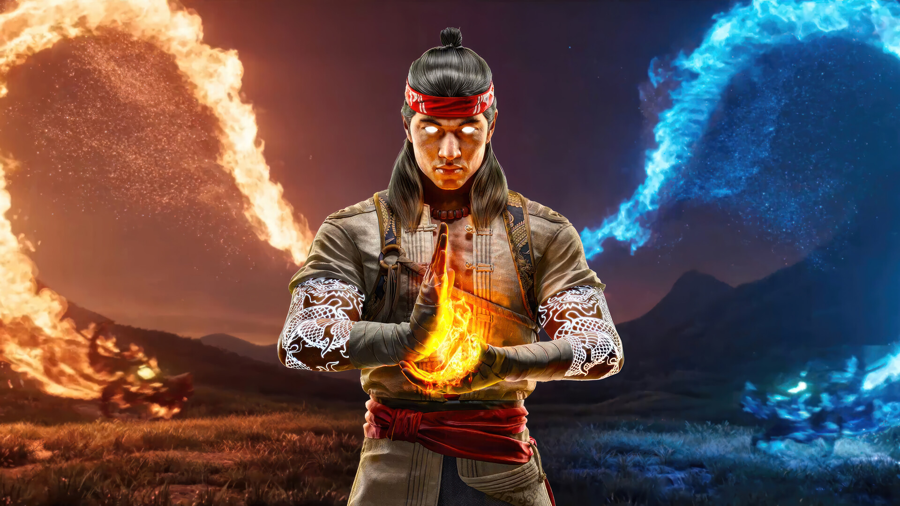
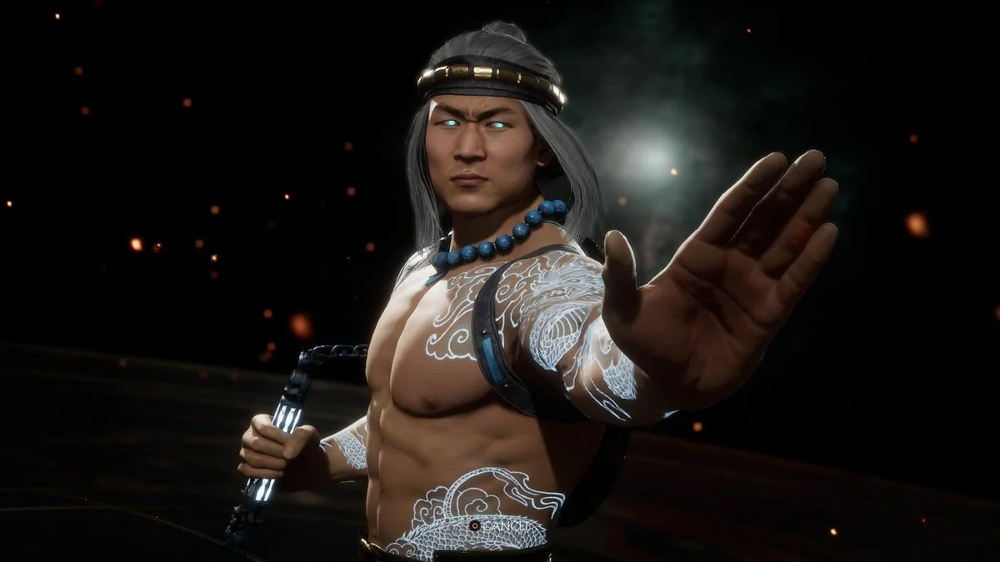

Liu Kang Deus do Fogo
Liu Kang em Mortal Kombat
>Liu Kang é um dos personagens mais icônicos da franquia Mortal Kombat e um símbolo do heroísmo e da virtude. Ele começa sua jornada como um humilde monge shaolin, dedicado às artes marciais e à proteção da humanidade. Escolhido como o campeão da Terra, ele participa do torneio Mortal Kombat, um evento criado para decidir o destino dos reinos. Desde o início, Liu Kang demonstra sua coragem, habilidade e senso de justiça, enfrentando poderosos inimigos como Shang Tsung, o feiticeiro traiçoeiro, e Shao Kahn, o imperador tirano do Mundo Exterior.
Ao longo de sua trajetória, Liu Kang vence diversos torneios, consolidando seu papel como defensor da Terra. No entanto, sua jornada está longe de ser fácil. Ele enfrenta perdas pessoais, traições e até a própria morte. Em um dos momentos mais marcantes da série, Liu Kang é assassinado e posteriormente ressuscitado, tornando-se um guerreiro ainda mais poderoso. Essa transformação o conduz a um novo patamar, elevando-o de um simples campeão para uma figura divina.
Com o tempo, Liu Kang assume o manto de Deus do Fogo, unindo seu domínio sobre as chamas à sua responsabilidade de manter o equilíbrio entre os reinos. Como divindade, ele não apenas luta contra ameaças cósmicas, mas também guia seus aliados com sabedoria e força. Sua nova posição reflete sua evolução como personagem: de um jovem monge idealista para um líder divino, comprometido com a proteção da Terra e de todos os seus habitantes.

Estilo de Luta
ele luta kung fu
